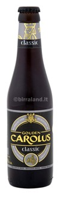

 |
Provenienza: Belgio
Fermentazione: Alta, rifermentata in bottiglia.
Stile: Ale tradizionale artigianale.
Gradazione alcolica: 8.5% Vol
Colore: Ambrato scuro
Aspetto: Bruna con i suoi riflessi rosso rubino, una perlage medio
ed una spuma cremosa e compatta color nocciola.
Olfatto: Aromi e profumi pieni, sulel note calde del tostato, del cereale
torrefatto e dei frutti maturi a bacca rossa
con intriganti sfumature speziate.
Gusto: Corpo morbido e cremoso, dall'aroma di cioccolato, e dal
retrogusto di caffè macchiato con un tocco di liquore.
Evidenti le venature di liquirizia.
Note generali: Una birra capace di donare il calore del vino e della
freschezza della birra. Composta da un sapiente mix
di malti d'orzo e prodotta seguendo il metodo
classico dell'infisione. Senza alcun genere di additivi.
Abbinamento: Taglieri di salumi importati e formaggi affumicati,
accompagnati da salse forti e piccanti. Primi piatti
di pasta all'uovo con sughi elaborati, meglio se di
selvaggina. Dolci secchi alle mandorle o nocciole,
pan di spagna aromatizzato al cioccolato, al caffè,
al liquore, dessert a base di vincotto. |